★Graphic Tools Guide
★SEGA CONVERTERユーザーズマニュアル
★Graphic Tools Guide
★SEGA CONVERTERユーザーズマニュアル
▲
戻る｜
進む▼
SEGA CONVERTERユーザーズマニュアル
２．メニュー
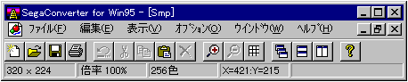
-
■「ファイル」メニュー
- ファイルの入出力等のファイル管理を行います。また、印刷や終了等の処理もこのメニューで実行します。
- ◆新規
- 新しいファイルを作成します。
- 【ダイアログボックス】
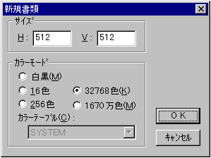
- サイズ
新しいファイルの幅（Ｈ）・高さ（Ｖ）を入力します。
- カラーモード
新しいファイルのカラーモードを選択します。16色または256色モードを選択する場合、ファイルに使用するカラーテーブルも選択します。
- ◆開く
- 既に保存されているファイルを開きます。
- ◆閉じる
- 現在作業中のファイルを閉じます。
- ◆保存
- 現在作業中のファイルを保存します。
- ◆別名で保存
- 現在作業中のファイルに名前をつけて、別ファイルとして保存します。
- ◆カタログ
- 複数ファイルに対する一括処理の準備や、実行を行います。
カタログ機能の詳細
- ◆ページ設定
- 印刷する際のページレイアウトを設定します。
- ◆印刷
- 現在作業中のファイルを印刷します。
- ◆１〜４
- 最近開いたり、保存したファイルから順番に４ファイルが表示されます。
- ◆終了
- 「Sega Converter」を終了します。
■「編集」メニュー
- 切り取り・貼り付け等の画像の編集を行います。また、「Sega Converter」を利用する上での作業環境の設定もここで行います。
- ◆元に戻す
- 直前の操作を取り消します。取り消しできない機能もあるので注意が必要です。
- ◆切り取り
- 選択範囲の画像を切り取ります。切り取られた画像はクリップボードに保管されます。
- ◆コピー
- 選択範囲の画像を複写します。複写された画像はクリップボードに保管されます。
- ◆貼り付け
- クリップボードに保管された画像を、現在作業中の画像の上に貼り付けます。貼り付けられた直後の画像は、移動可能な状態（フローティング状態）になっています。
- ◆削除
- 選択範囲の画像を消去します。
- ◆全てを選択
- 画像全体を選択します。
- ◆選択解除
- 選択を解除します。フローティング状態の画像は、現在の位置に決定されます。
- ◆クリップボードのクリア
- クリップボードの画像を削除します。
- ◆プロパティ
- 各種編集作業の環境設定を行います。
- 【グリッド】
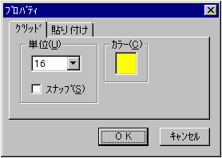
- 単位
グリッドのサイズを選択します。
- スナップ
選択操作時に指定グリッドサイズ単位で動作するようになります。
- カラー
グリッドの色を指定します。
- 【貼り付け】
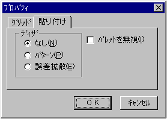
- ディザ
貼り付け先の画像に使用されている色数がクリップボード画像で使用されている色数よりも多い場合の合成の手法を選択します。
- パレットを無視
カラーテーブルを無視してビットマップ情報だけを貼り付けます。
■「表示」メニュー
- 作業中の画像の表示倍率を変えたり、グリッドの表示／非表示を決定します。
- ◆倍率
- 現在作業中の画像を指定倍率で拡大表示します。
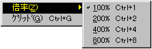
- ◆グリッド
- 現在作業中の画像に指定単位の格子を表示／非表示します。
格子の単位は「編集」→「プロパティ」で指定します。
■「オプション」メニュー
- カラーモードの相互変換や各種フィルタ処理を実行します。
- ◆白黒
◆16色
◆256色
◆約32000色
◆約1670万色
- 現在作業中の画像を、指定色数のカラーモードに変換します。指定色数が変換前の色数よりも少なかった場合、変換方法を指定する事ができます。
- 【ダイアログ】
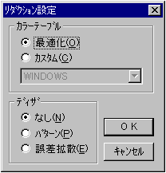
- 【カラーテーブル】
変換カラーモードが16色または256色の場合、変換に使用するカラーテーブルを指定します。
- 最適化
現在作業中の画像のカラー情報をを検索し、指定色数で最適化されたカラーテーブルを生成します。
- カスタム
既に登録されたカラーテーブルを使用します。
- 【ディザ】
変換によって不足したカラーを表示するためのディザ処理の方法を選択します。
- なし
ディザ処理を行いません。
- パターン
パターンディザ処理を行います。
- 誤差拡散
誤差拡散法でディザ処理を行います。
- ◆カラーテーブル
- 現在作業中の画像が16色または256色の場合、その画像に使用されているカラーテーブルを表示します。
- 【ダイアログ】
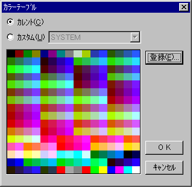
- カレント
現在作業中の画像に使用されているカラーテーブルを表示します。
- カスタム
既に登録されているカラーテーブルを表示します。
- 登録
表示されているカラーテーブルを新規に登録します。
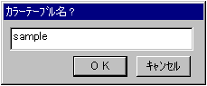
- ◆フィルタ
- 現在作業中の画像に様々なフィルタをかけるプラグイン機能です。
- ◆表現
- 現在作業中の画像の表現手法を変化させるプラグイン機能です。
- ◆効果
- 現在作業中の画像に効果をかけるプラグイン機能です。
- ◆その他
- その他の処理を行うプラグイン機能です。
なお、プラグイン機能は範囲が選択されていた場合はその内部に、選択されていない場合は画像全体に影響します。
■「ウィンドウ」メニュー
- 現在、画面に表示されているウィンドウの名前を表示します。また各ウィンドウの整列の方法を決定します。
- ◆重ねて表示
- ウィンドウを左上から重ねて表示します。
- ◆上下に並べて表示
- 全てのウィンドウを上下に並べて表示します。
- ◆左右に並べて表示
- 全てのウィンドウを左右に並べて表示します。
- ◆アイコンの整列
- 全ての最小化（アイコン化）されたウィンドウを整列させます。
- ◆全て閉じる
- 全てのウィンドウを閉じます。
■「ヘルプ」メニュー
- 「Sega Converter」の使い方を説明するヘルプファイルを表示します。また、「Sega Converter」の情報を表示します。
- ◆目次
- ヘルプファイルの目次を表示します。
- ◆バージョン情報
- 「Sega Converter」のバージョン等の情報を表示します。
■カタログ機能
- カタログ機能は、複数ファイルに対する各種処理を連続して実行する、ＧＵＩアプリケーションではあまり見かけない、「Sega Converter」の特徴ともいえる機能です。
現在は、ファイルフォーマットの相互変換やカラーリダクション機能等をサポートしています。
-
- ◆リスト編集
- カタログ機能の対象となるファイルリストの追加・削除等の編集を行います。
- 【ダイアログ】
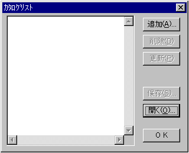
- 追加
ファイルリストにファイルを追加します。
- 削除
ファイルリスト内の選択されたファイルを、リストから削除します。
- 更新
ファイルリストを最新のファイル情報を基に更新します。外部でファイルの移動等の操作があった場合、以後のカタログ機能に矛盾が起こらないようにする補助的な役割を果たします。
- 保存
現在のファイルリストを保存します。
- 開く
既に保存されたファイルリストを読み込みます。現在のファイルリストは、読み込まれたリストに変わります。
- ◆表示
- リストに登録されたファイルを順番に開きます。
- 【ダイアログ】
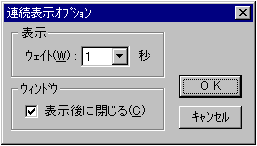
- ウェイト
次のファイルを開くまでの間隔（秒）を選択します。
- 表示後に閉じる
チェックされていた場合、ファイルを開いた後に自動的にウィンドウを閉じます。
- ◆保存
- リストに登録されたファイルを別名で保存します。
- 【ダイアログ】
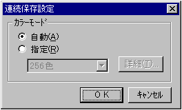
- 自動
保存するファイルのカラーモードを自動的に設定します。基本的には、カラーモードは変更しません。
- 指定
保存するファイルのカラーモードを指定します。
- 詳細
カラーモードを指定する場合、より詳しい条件を設定することができます。設定内容は「オプション」メニューのカラーモード設定時と同様です。
- ◆カラーテーブル
- リストに登録された全てのファイルから、最適化されたカラーテーブルを生成します。生成されたカラーテーブルは、自動的に登録されます。
- 【ダイアログ】
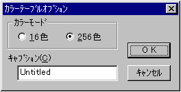
- カラーモード
生成するカラーテーブルの色数を選択します。
- キャプション
カラーテーブルの登録名を入力します。
▲
戻る｜
進む▼
★Graphic Tools Guide
★SEGA CONVERTERユーザーズマニュアル
Copyright SEGA ENTERPRISES, LTD,. 1997